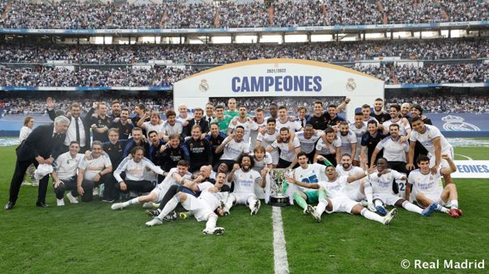
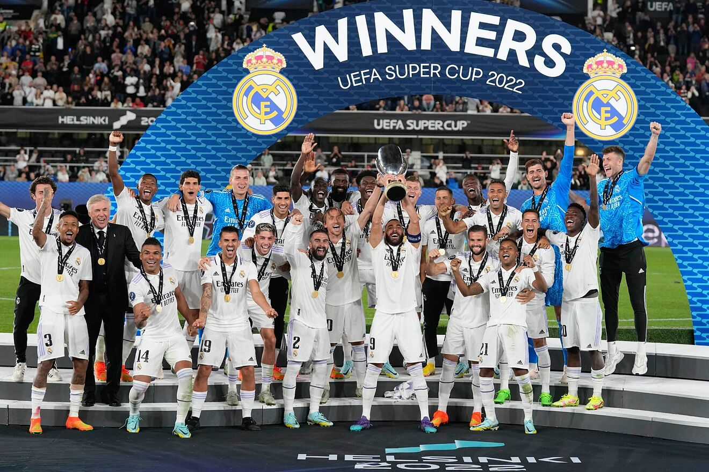

El Real Madrid, después del último mundial de clubes es el primer equipo de las 5 grandes ligas (Inglaterra, España, Framcia, Itcalia y Alemania) que llega a los 100 trofeos oficiales y estos son algunos de los más importantes:
| Champions League (x14) |
|
| Liga Española (x35) |  |
| Copa del Rey (x19) |
|
| Mundial de Clubes/Intercontinental (x8) | |
| Supercopa de Europa (x5) |  |
| Supercopa de España (x12) |
|